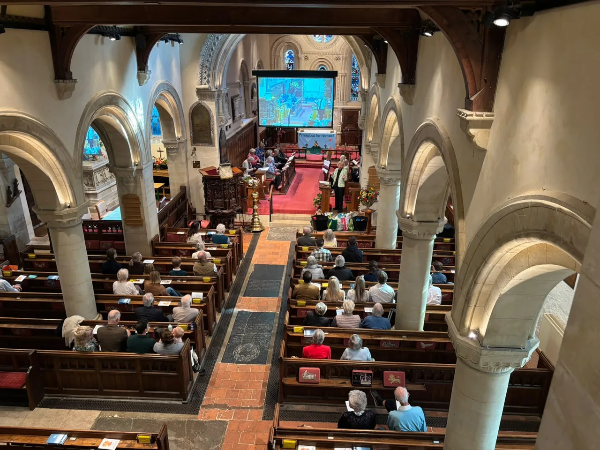
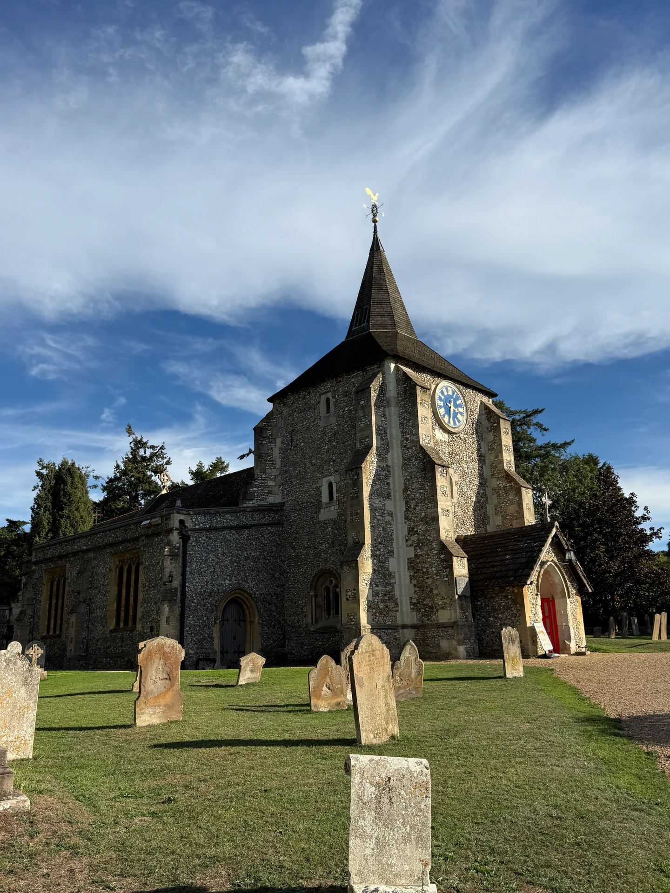

A warm welcome to
Mickleham &
Westhumble
To know Jesus and make him known.Whoever you are, you are welcome here.
About our parish
We are a friendly and inclusive church at the heart of Mickleham, with the Chapel of Ease in nearby Westhumble. Our parish is a place of worship, welcome and community, set within the beauty of the Surrey Hills.


Discover St Michael’s
Our parish, our stories and centuries of faith.
Our parish
A place to worship, belong and serve.
St Michael and All Angels in Mickleham and the Chapel of Ease in Westhumble form a friendly local church community, seeking to grow spiritually, make Jesus Christ known and serve our neighbours.
Meet our parish
Latest from St Michael’s
A Harvest of Thankfulness
Harvest Family Service · 4 October 2026
Flowers, worship, food and fellowship filled St Michael's as our church family gathered to celebrate Harvest together.
Read the story


Our history
Centuries of faith in Mickleham
Discover the clergy, people, photographs and stories preserved in our parish archive.
Explore our historySupporting our work
Ways to get involved

Care for creation
Eco Church Silver Award 2024
St Michael & All Angels received the A Rocha UK Eco Church Silver Award in 2024, recognising the parish’s care for creation.
Discover our Eco Church work
Help us continue our work
Support our church
Help care for our buildings, support ministry and serve our community.
Ways to giveOur wider church
Part of the Diocese of Guildford
Part of the Church of England and the Diocese of Guildford.
Learn more about the Diocese